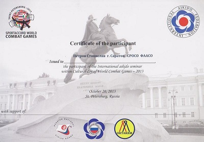
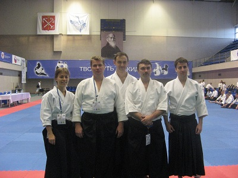
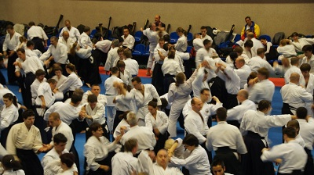
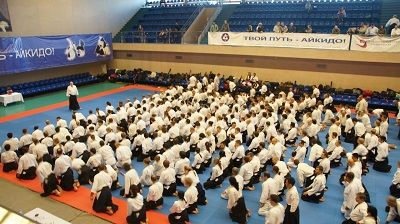
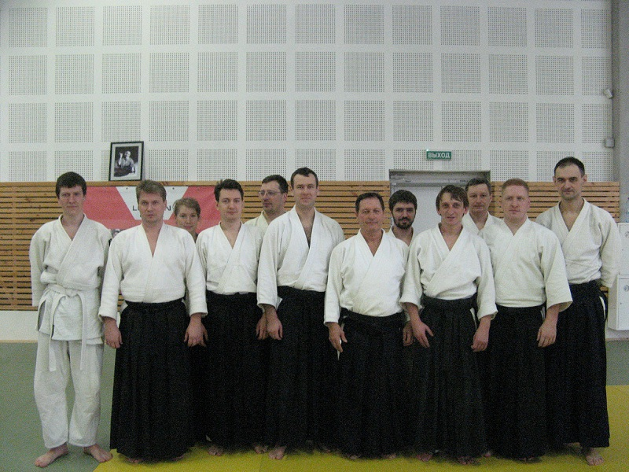
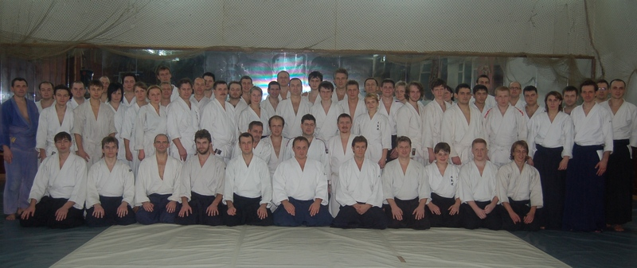
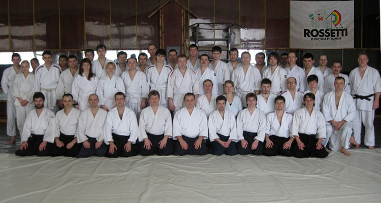
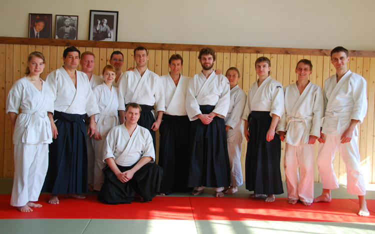

|
|
Руководитель Федерации Айкидо Айкикай Саратовской
Области, Петров Станислав, выступил качестве одного
из участников и организаторов международного
семинара по айкидо, в рамках Культурного Дня Вторых
Всемирных Игр боевых искусств-2013 в Санкт-Петербурге.
Это единственный представитель Саратова на столь
значительном мероприятии в мире боевых искусств.
Семинар проводили мастера айкидо с мировым именем:
Миямото Тсурудзо (7 дан айкидо айкикай), Ульф Эвенас
(7 дан айкидо айкикай), Кристиан Тиссье (7 дан айкидо
айкикай), который является техническим куратором
Саратовской Федерации Айкидо Айкикай. Завершится
семинар мастер-классом посла айкидо на Всемирных
Играх боевых искусств 2013 — вака-сенсея Мицутэру
Уэсибы.
|
|

|

|
|

|

|
|
|
Отчет о семинаре Тисье 23-24 марта 2013 в Москве
|
|
23-24 марта инструктора и старшие ученики Федерации
Айкидо Айкикай Саратовской Области традиционно
приняли участие в ежегодном международном семинаре
Кристиана Тиссье в Москве. Организатор семинара -
Московский айкиклуб «Гакумон Додзе» и его руководитель
Михаил Сафронов. Официальный представитель школы
Тиссье в России.
|
|
В семинаре приняли участие более 200 человек.
Кроме занимающихся в филиалах «Гакумон Додзе» из
14 городов, на татами вышли представители сборной
России по айкидо , которые будут представлять нашу
страну во время всемирных игр по боевым искусствам
в Питере в 2013 , а так же представители школ
реального айкидо и айкидо есинкан. В качестве
наблюдателя присутствовал исполнительный директор
Национального Совета Айкидо России, руководители
ФАР и «Оосинкан».
|
|
Невиданный всплеск интереса к семинару объясняется,
конечно же, уникальной техникой мастера. И,
возможно, немного тем фактом, что Кристиан Тиссье
будет почетным гостем на тех самых играх в Питере
в 2013. В любом случае, не зависимо от причины,
приятно внимание к семинару, которое проявляют
руководители крупнейших российских клубов и
спортивные функционеры от айкидо.
|
|

|
|
|
28-30 января 2011 года в Москве прошел семинар
Бруно Ганзалеса 5 Дан айкидо айкикай (Франция),
в котором приняли участие члены нашего клуба.
Фоторепортаж с семинара
|
|
18-19 декабря 2010 года в Саратове прошел семинар
Паскаля Гиймана 5 Дан айкидо айкикай (Франция).
В рамках семинара состоялись тренировки по айкидо,
занятие с боккеном, а также прошла аттестация.
Поздравляем всех аттестованных, особенно Доманскую
Инну и Ярлова Михаила с аттестацией на 1 Дан
айкидо айкикай.
Фоторепортаж с семинара
|
|

|
|
|
24 - 26 сентября 2010 года в Москве прошел семинар
Паскаля Гиймана 5 Дан Айкидо Айкикай, в котором
приняли участие члены нашего клуба.
Фоторепортаж с семинара
|
|
|
4-6 июня 2010 года в Москве прошел семинар Паскаля
Гиймана 5 Дан Айкидо Айкикай, в котором приняли
участие члены нашего клуба.
|
|
|
17-18 апреля 2010 года в Саратове прошел семинар
Михаила Орлова (г. Москва) по Ки Айкидо, в котором
приняли участие члены нашего клуба. Фотографии с
семинара можно посмотреть на сайте
http://www.kiaikidoka.ru
|
|
5-7 марта 2010 года в Саратове прошел семинар Михаила
Сафронова 4 Дан Айкидо Айкикай. В рамках семинара
состоялись тренировки по айкидо, занятие с боккеном,
а также прошла аттестация.
Поздравляем всех аттестованных, особенно Митина
Петра и Чумичкина Антона с аттестацией на 1 Дан
Айкидо Айкикай.
|
|

|
|
13-15 ноября 2009 года в Саратове прошел семинар
Михаила Сафронова 4 Дан Айкидо Айкикай. В рамках
семинара состоялись тренировки по айкидо, занятие
с боккеном, а также прошла аттестация.
Поздравляем всех аттестованных, особенно Пасешникову
Александру, Рыхлова Дмитрия, Тощева Павла и Пчелинцева
Дениса с аттестацией на 1 Дан Айкидо Айкикай.
|

|
|
|
6-7 июня в Саратове прошел первый семинар по
ки-айкидо, в котором приняли участие члены нашего
клуба. Фотографии с семинара можно посмотреть на сайте
http://www.kiaikidoka.ru
|
|
|
10-12 апреля в Москве прошел семинар Паскаля
Гиймана 5 Дан Айкидо Айкикай.
|
|

|
|
|
3-5 апреля 2009 года в Саратове прошел семинар
Михаила Сафронова 4 Дан Айкидо Айкикай. В рамках
семинара состоялись тренировки по айкидо, занятие
с боккеном, а так же прошла аттестация.
Поздравляем всех аттестованных.
|

|
|
|
|
|
|
|
|
|